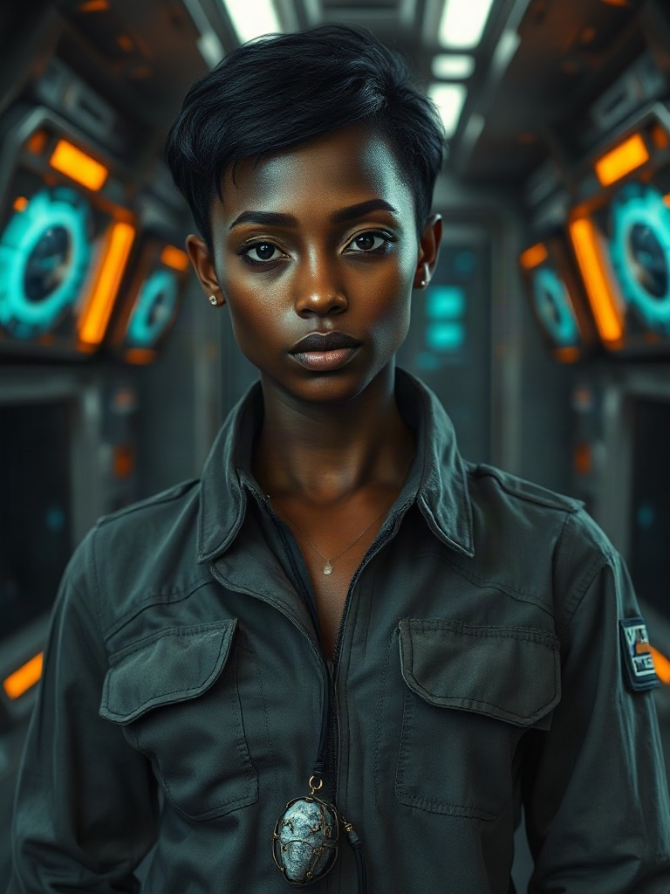
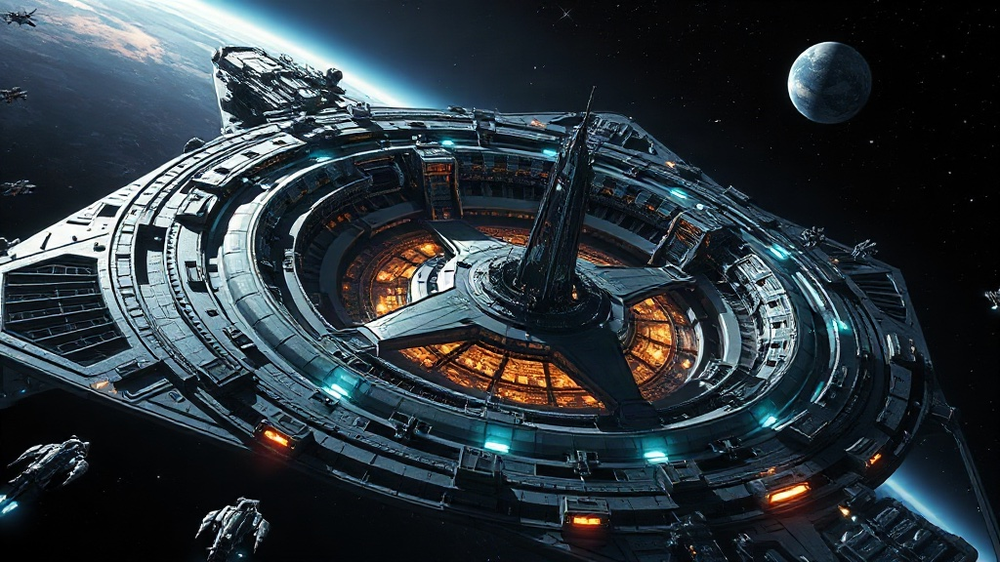
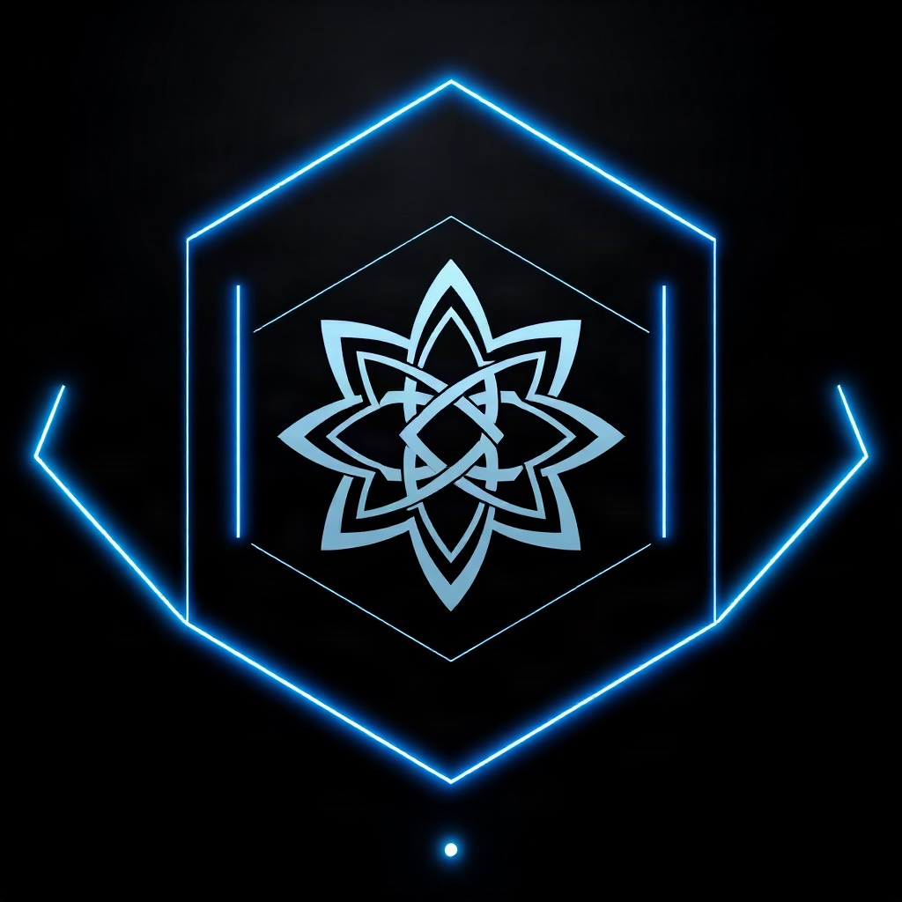
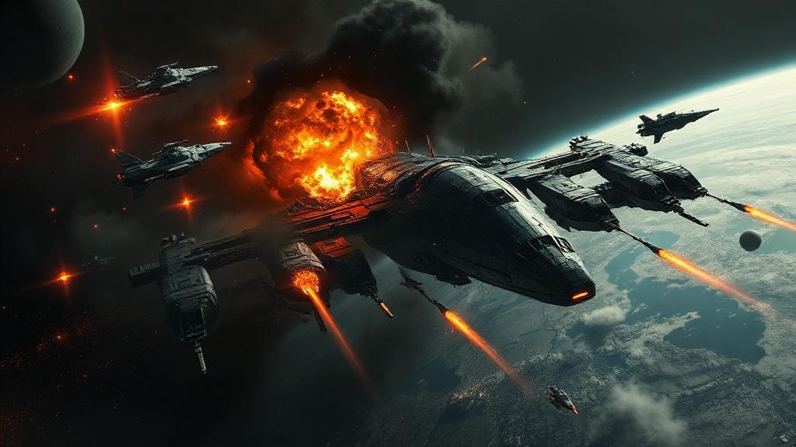

Truth Chains & Memory Chains
Events record caused_by and leads_to. Myths, songs, and taboos live as traditions that descend from real events and distort them over centuries — so your people can believe a lie while you still know the truth.
WorldBuilder is a multi-agent plugin for building fictional worlds where every war, trade route, myth, and bloodline actually has a cause. Plain Markdown + YAML files, a deterministic graph checker, an outrageously over-the-top 3D/2D visualiser, and optional browser-OAuth fal.ai artwork.
Events record caused_by and leads_to. Myths, songs, and taboos live as traditions that descend from real events and distort them over centuries — so your people can believe a lie while you still know the truth.
Set world_flags.magic.present: false and nothing supernatural sneaks into your hard sci-fi or historical world — not in lore, not in prose, and not in your generated artwork. The validator enforces it.
Geography and climate first, then resources, peoples, economy, history, and folklore. Cities sit where food and trade routes justify them. Rivers never flow uphill.
Just plain Markdown + YAML files and Python 3.9+ stdlib scripts (PyYAML is vendored). No database, no Docker stack, no server — runs natively inside desktop agent sandboxes.
WorldBuilder ships dual manifests (plugin.json + .claude-plugin/plugin.json), portable relative skill paths, and dual OAuth MCP configs so it works natively everywhere.
Connect fal.ai's official remote Streamable HTTP MCP server (https://mcp.fal.ai/mcp-relay) with a one-click browser sign-in. Every portrait, landscape, emblem, and event scene obeys your world_flags, logs its token/megapixel cost to output/art-usage.yaml, and flows straight into the visualiser's Gallery & Lightbox.

Rim-born navigator, UV-scarred cheekbones, functional neural interface, null-crystal pendant — zero fantasy magic.

40 km concentric chrome-and-glass orbital hub hanging at Sol System's Lagrange point.

Rendered directly from the entity's YAML heraldry.sigil blazon: white lattice-knot star on black with electric blue border.

Autonomous defence platforms turning on orbital shipyards — the real event behind two contradictory surviving traditions.
output/art-usage.yaml)$ python3 skills/world-art/scripts/log_usage.py summary worlds/the-lattice
Generations: 4
Total tokens: 0
Total megapixels: 3.0146 MP
Estimated cost: $0.009043 USD
By model:
- fal-ai/flux/schnell: 4 run(s), 0 tokens, 3.0146 MP, $0.0090434 morphing 3D layouts, streaming causal energy particles, shockwaves, fly-to-node camera, and a live radar minimap.
Animated Bézier causal arcs, Era Density Scrubber, zoomable biome atlas, 3-column Trade Sankey, and Ecological Web.
Unmute to hear the looping Lyria ambient soundtrack and voiced characters (Selene & Lyra) alongside 20 fal.ai artworks, Lightbox, and Telemetry HUD.